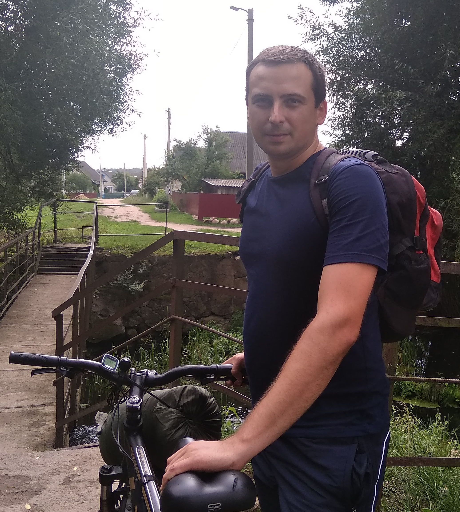

Alexandre Pylaev
- Contacts: mobile +375 29 771 42 74, Viber, Telegram, alpy86@tut.by
- My goal: to participate in development of new programs simplifying and improving human use of opportunities
- Skills: novice level of JavaScript, HTML, CSS, Git
- Code example:
function createFunctions(n) { var callbacks = []; var v = 0; var item = function() { return v++; }; for (var i=0; i<n; i++) { callbacks.push(item); } return callbacks; } - Achievement: developed technical task and implemented Automated minibus (fixed-route-taxi) system management, information for ordinary user about the work of minibuses in Minsk is available here
- Education: higher, Belarusian National Technical University, engineer; online courses CodeAcademy, HTML Academy, CodeWars
- English: studied at the university for 5 years, approximate level A2+